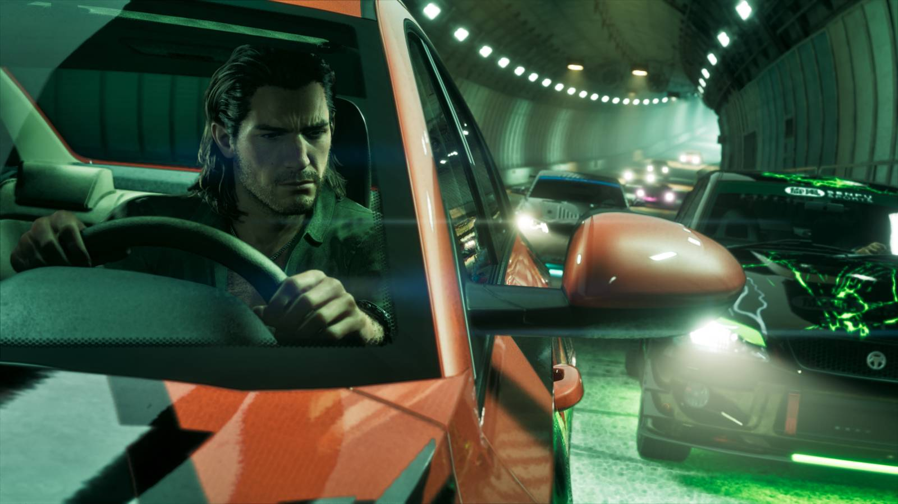

Gaming · 20 Nov 2026
GTA 6 Shows Why You Should Never, Ever, Ever Text and Drive (Ever)

You can pull off a lot of crimes in Grand Theft Auto 6, but texting and driving might be the most dangerous one of all.
Multiple independent publishers are reporting on the same development: GTA 6 Shows Why You Should Never, Ever, Ever Text and Drive (Ever).
The available reports place the development in the Gaming category. The accounts were compared for agreement on the central event rather than simply shared names or broad topics.
One of the available reports describes the development this way: You can pull off a lot of crimes in Grand Theft Auto 6, but texting and driving might be the most dangerous one of all.
Readers should consult the linked source reports for additional context, updates and details that may change as the story develops.
Sources
This article was produced by the C. O. Eric AI Newsroom from the cited sources. It is published only after automated evidence and safety checks.